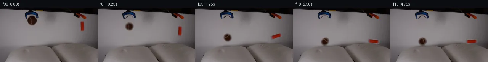

![首帧]()

Round 00
2026-11-04T16:47:48.938646+00:00像素候选变化代码 +305/−0inspection 更新
pixels c007867afd6f0257 · code 5333907b0a76e70a
查看本轮 generate.py 真实 diff
--- previous/generate.py +++ current/generate.py @@ -0,0 +1,305 @@ +#!/usr/bin/env python3 +"""Generate the requested 20-frame, source-derived physics animation. + +All image content comes from first_frame.png or from analytic pixel operations. +No external image, model, renderer, or engine is used. +""" + +from pathlib import Path +import numpy as np +from PIL import Image, ImageDraw, ImageFilter, ImageFont + +from artifact_io import save + + +ROOT = Path(__file__).resolve().parent +W, H = 256, 144 + + +def poly_wall_fill(src, target_mask, sample_box): + """Replace target pixels with a quadratic fit to nearby neutral wall pixels.""" + out = src.astype(np.float64).copy() + x0, y0, x1, y1 = sample_box + yy, xx = np.mgrid[y0:y1, x0:x1] + pix = src[y0:y1, x0:x1].astype(np.float64) + local_target = target_mask[y0:y1, x0:x1] + neutral = (pix.max(axis=2) - pix.min(axis=2) < 16) + bright = pix.mean(axis=2) > 78 + valid = (~local_target) & neutral & bright + xn = (xx - (x0 + x1 - 1) / 2) / max(1, (x1 - x0)) + yn = (yy - (y0 + y1 - 1) / 2) / max(1, (y1 - y0)) + design = np.stack( + [np.ones_like(xn), xn, yn, xn * yn, xn * xn, yn * yn], axis=-1 + ) + a = design[valid] + for channel in range(3): + coeff, *_ = np.linalg.lstsq(a, pix[..., channel][valid], rcond=None) + prediction = np.tensordot(design, coeff, axes=([-1], [0])) + channel_view = out[y0:y1, x0:x1, channel] + channel_view[local_target] = prediction[local_target] + return np.clip(out, 0, 255).astype(np.uint8) + + +def largest_component(mask): + """Return the largest 4-connected component of a small boolean mask.""" + h, w = mask.shape + seen = np.zeros_like(mask, bool) + best = [] + for y, x in zip(*np.where(mask)): + if seen[y, x]: + continue + stack = [(int(y), int(x))] + seen[y, x] = True + comp = [] + while stack: + cy, cx = stack.pop() + comp.append((cy, cx)) + for dy, dx in ((1, 0), (-1, 0), (0, 1), (0, -1)): + ny, nx = cy + dy, cx + dx + if 0 <= ny < h and 0 <= nx < w and mask[ny, nx] and not seen[ny, nx]: + seen[ny, nx] = True + stack.append((ny, nx)) + if len(comp) > len(best): + best = comp + result = np.zeros_like(mask, bool) + for y, x in best: + result[y, x] = True + return result + + +def make_source_sprites(src): + """Extract textured ball and block sprites from the source frame.""" + # Ball: an antialiased ellipse, with blue grabber pixels excluded. + bx0, by0, bx1, by1 = 70, 20, 99, 47 + ball_rgb = src[by0:by1, bx0:bx1].copy() + yy, xx = np.mgrid[0 : by1 - by0, 0 : bx1 - bx0] + d = np.sqrt(((xx - 14.0) / 12.2) ** 2 + ((yy - 13.7) / 11.7) ** 2) + alpha = np.clip((1.035 - d) * 510.0, 0, 255) + r, g, b = [ball_rgb[..., i].astype(float) for i in range(3)] + blue = (b > r * 1.15) & (b > g * 1.05) & (r < 80) + alpha[blue] = 0 + ball = Image.fromarray(np.dstack([ball_rgb, alpha.astype(np.uint8)]), "RGBA") + + # Block: red/orange dominance isolates it cleanly from the neutral wall. + ox0, oy0, ox1, oy1 = 208, 31, 225, 65 + block_rgb = src[oy0:oy1, ox0:ox1].copy() + rr = block_rgb[..., 0].astype(int) + gg = block_rgb[..., 1].astype(int) … diff truncated; 218 more lines …